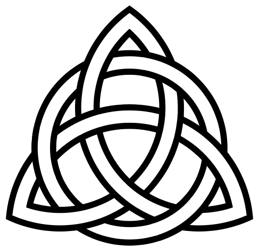

 Myth is a folklore genre consisting of narratives or stories that play a fundamental role in a society, such as foundational tales or origin myths. The main characters in myths are usually gods, demigods or supernatural humans.[1][2][3] Stories of everyday human beings, although often of leaders of some type, are usually contained in legends, as opposed to myths. Myths are often endorsed by rulers and priests or priestesses, and are closely linked to religion or spirituality. Many societies group their myths, legends and history together, considering myths and legends to be true accounts of their remote past.[1][2][4][5] In particular, creation myths take place in a primordial age when the world had not achieved its later form.[1][6][7] Other myths explain how a society's customs, institutions and taboos were established and sanctified. There is a complex relationship between recital of myths and enactment of rituals. The term mythology may either refer to the study of myths in general, or a body of myths regarding a particular subject. The study of myth began in ancient history. Rival classes of the Greek myths by Euhemerus, Plato, and Sallustius were developed by the Neoplatonists and later revived by Renaissance mythographers. Today, the study of myth continues in a wide variety of academic fields, including folklore studies, philology, psychology, and anthropology. Moreover, the academic comparisons of bodies of myth are known as comparative mythology. Since the term myth is widely used to imply that a story is not objectively true, the identification of a narrative as a myth can be highly political: many adherents of religions view their religion's stories as true and therefore object to the stories being characterised as myths. Nevertheless, scholars now routinely speak of Christian mythology, Jewish mythology, Islamic mythology, Hindu mythology, and so forth. Traditionally, Western scholarship, with its Judeo-Christian heritage, has viewed narratives in the Abrahamic religions as being the province of theology rather than mythology. Meanwhile, identifying religious stories of colonised cultures, such as stories in Hinduism, as myths enabled Western scholars to imply that they were of lower truth-value than the stories of Christianity. Labelling all religious narratives as myths can be thought of as treating different traditions with parity.